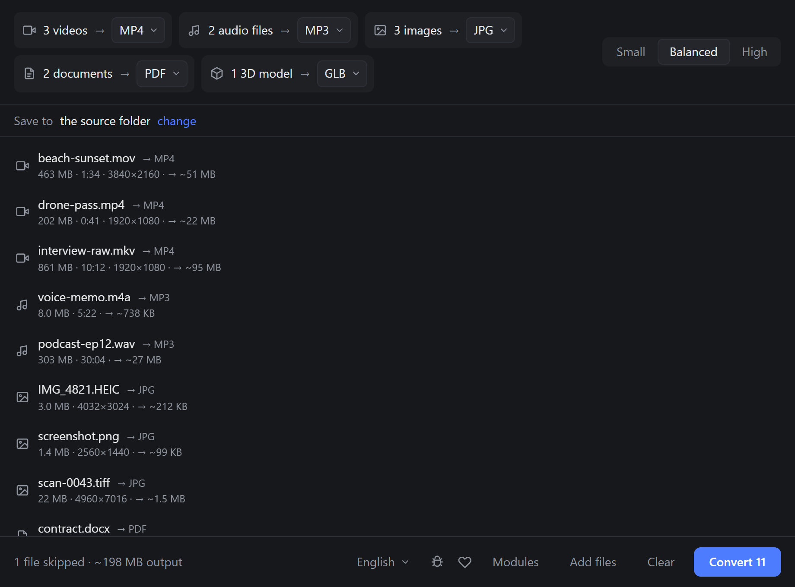
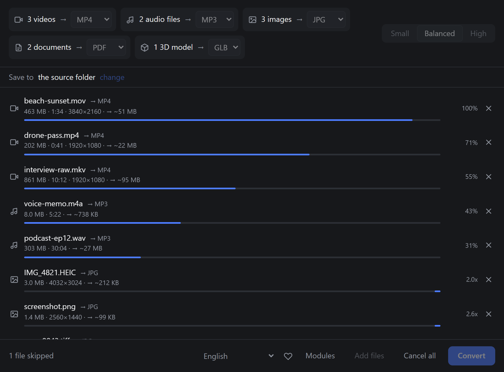
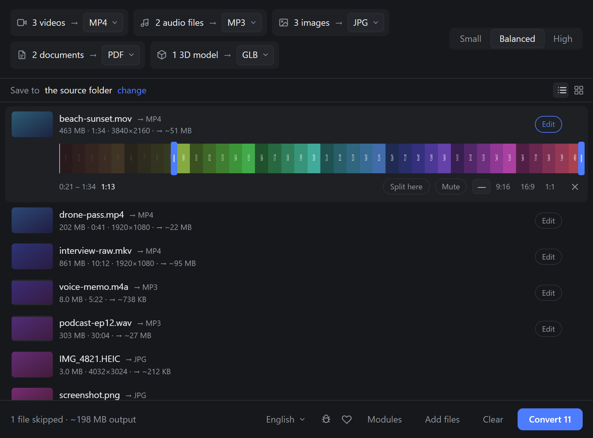
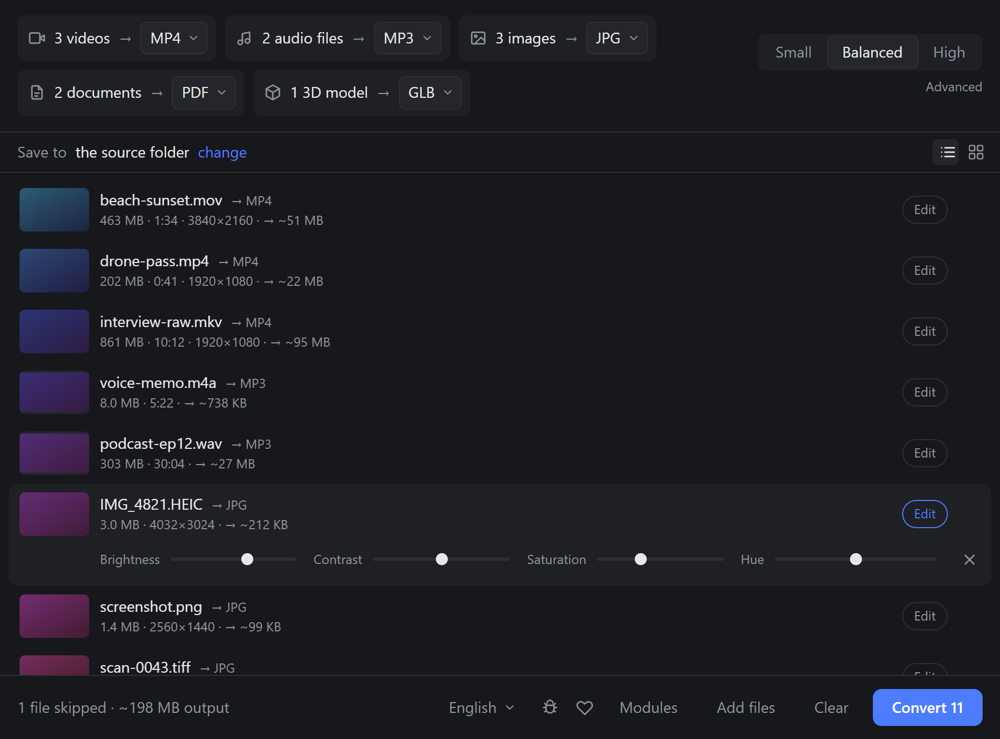
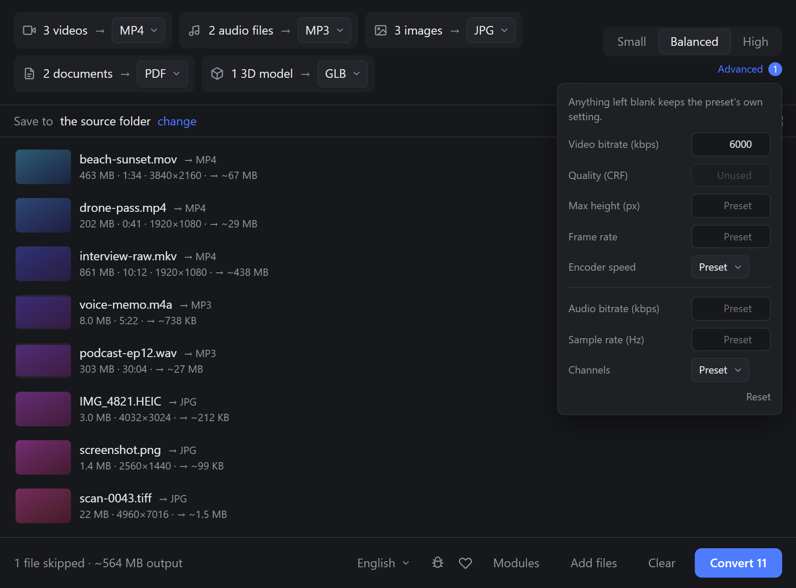
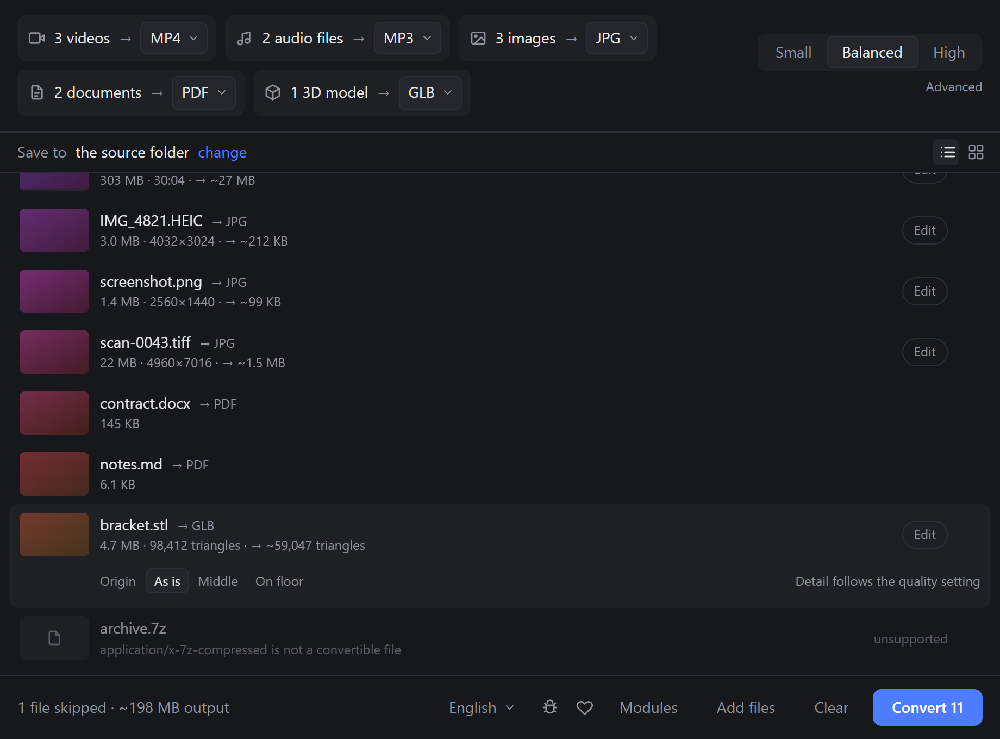
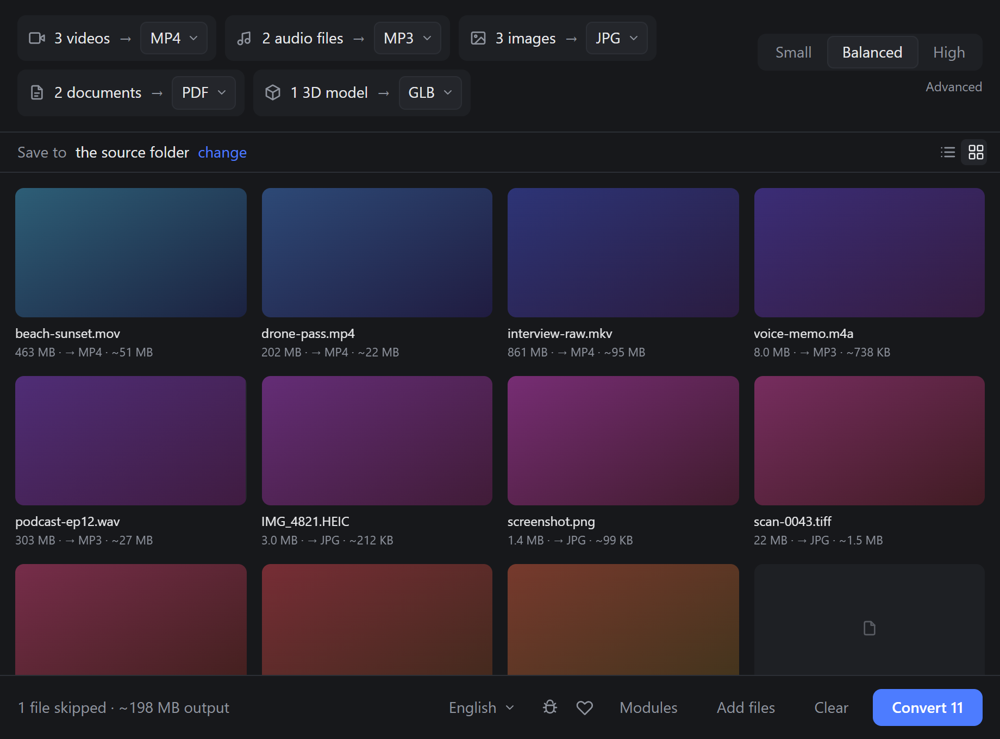
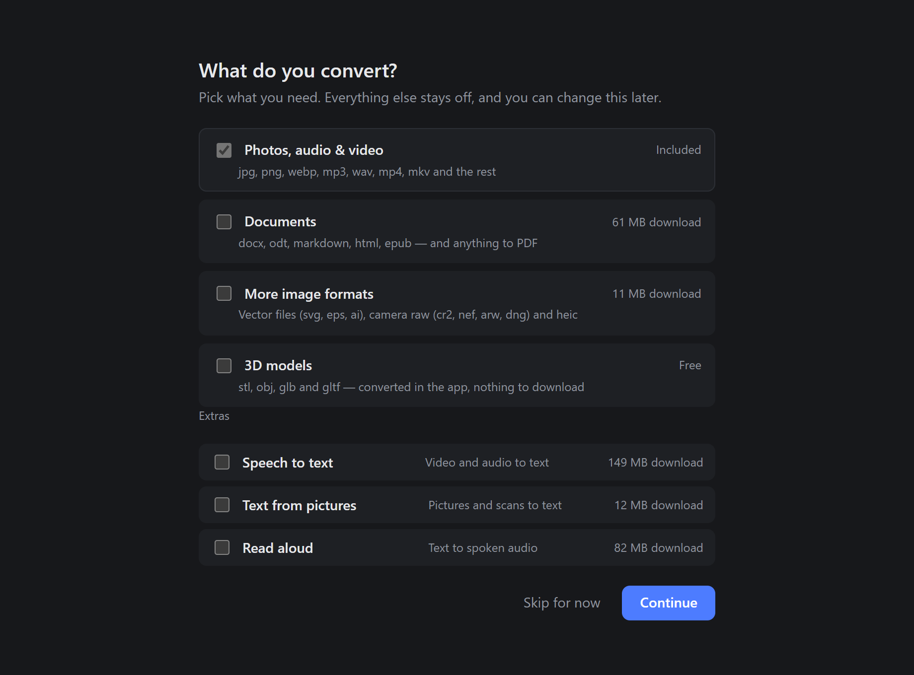
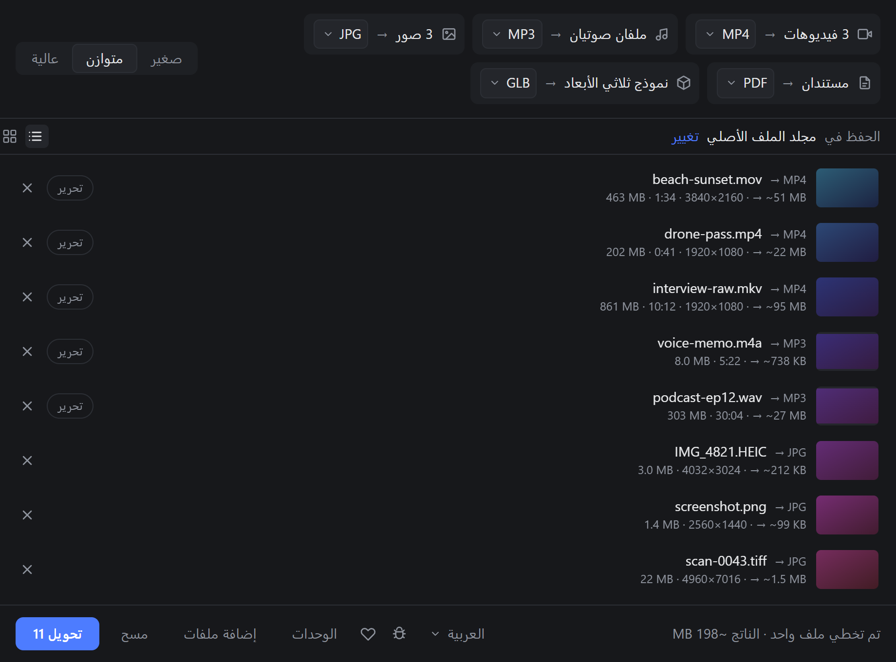

Convert audio, video, images, documents and 3D models — in batches, on your own machine.
Free and open source · GPL-3.0 · Windows, Linux and macOS
Drag a folder of mixed files in. Coldmill sorts them by what they actually are — by reading the file, not trusting its extension — and offers one target format per group.
Small, Balanced, High. No codec pickers, no CRF, no bitrate — unless you open Advanced and ask for them.
One job per processor core, each with live progress and its own cancel.
An estimate per file and for the whole batch, refined against the real byte count while it encodes.
Cut a clip on its own filmstrip, split it into pieces, mute it, or change its shape with a crop, bars or a blurred backdrop.
Brightness, contrast, saturation and hue, on photographs and video alike.
stl, obj, glb and gltf built in. Quality reduces the mesh, and the row says how many triangles will survive.
Documents, extra image formats, transcription, text from pictures and read-aloud. Downloaded only if you tick them.
Picked up from the system on first run. Right-to-left layouts are laid out properly, not mirrored.
There is no upload step, because there is no server. No account, no telemetry, no analytics, no update ping beyond the one that checks for a new version — and that one only asks GitHub for a version number. Pull the network cable out and everything on this page still works.
The whole thing is open source under the GPL, so that claim is checkable rather than promised.
One dark screen. Everything that is not needed right now stays out of the way.









Every build is signed, and the app verifies that signature before it installs an update.
An AppImage that runs anywhere, or a .deb. On Arch, the AppImage needs FUSE 2.
sudo pacman -S fuse2
Apple Silicon. Not signed by Apple yet, so the first launch needs one command.
xattr -dr com.apple.quarantine /Applications/Coldmill.app
Building from source needs Rust, Node and a one-off ffmpeg download — see the readme.